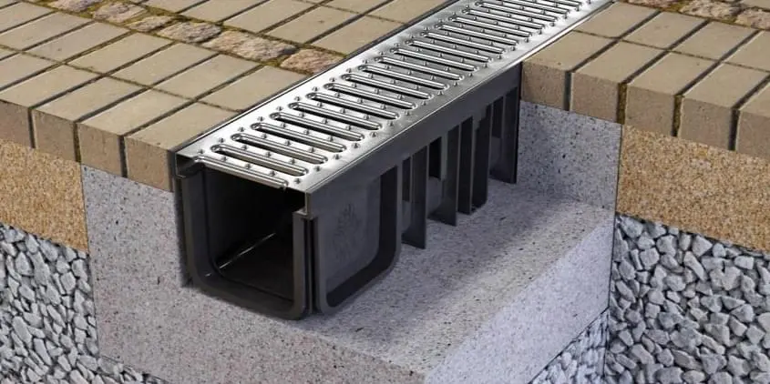
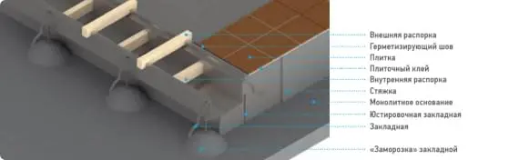
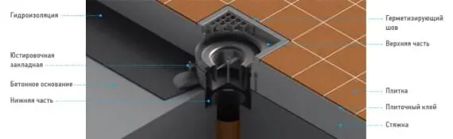

Смонтировать водоотвод
От правильности монтажа зависит долговечность используемой системы. Описанный ниже способ может применяться как при установке в готовый канал, так и при его отсутствии, то есть на стяжку или плиты перекрытия

Порядок монтажа лотков


- Рассортировать лотки — разложить секции по линиям согласно чертежам или монтажным схемам вдоль оси установки лотка. Установить выпуск в раструб канализационной трубы. При использовании двухкорпусных систем сначала устанавливается нижняя часть приемного устройства, в которую заводится гидроизоляция, а затем проводится монтаж в нижеследующем порядке.
- Проверить геометрию лотков. Особое внимание следует уделить местам поворотов и врезок лотков. Важно проверить ширину посадочного места под решетку, в редких случаях недобросовестной транспортировки геометрия лотка может нарушиться. Эти деформации легко исправляются без специальных средств или оборудования, но их необходимо выявлять до заливки бетона. Для этого можно изготовить внешнюю шаблон-распорку «Ш»-типа, как показано на рисунке.
- Соединить секции лотков точечной сваркой минимум в трех местах. Особое внимание следует уделить точному совмещению плоскостей лотков в дне, а также на внешней (лицевой) поверхности.
- Определить места приварки закладных на линии, но не реже чем 2 штуки на 1 метр, с обеих сторон, и приварить их. Определение мест приварки закладных лучше начинать от угловых соединений и врезок. В случаях, когда используются юстировочные закладные, они привариваются в производственных условиях по обеим сторонам каждой секции.
- Если юстировочные закладные не используются, в местах, где располагаются закладные, произвести сверление перекрытия (стяжки) и заложить вертикальную арматуру. Арматуру следует располагать как можно ближе к габаритным краям лотка. Сверление производится для устойчивого положения арматуры в момент выставления уровня лотков, и является рекомендуемым действием, а не обязательным.
- Выставить лотки по отметке чистого пола и зафиксировать их, прихватив сваркой закладные к вертикальной арматуре. При использовании юстировочных закладных уровень лотков выставляется с их помощью.
- Проверить совпадение оси лотка с проектной осью канала и соответствие верхней плоскости лотка с плоскостью чистого пола. Еще раз проверить геометрию лотков и установить распорки для исключения деформации лотков при бетонировании. Расстояние между распорками выбирается индивидуально в зависимости от ширины, глубины и толщины стали лотка.
- В местах установки арматуры (юстировочных закладных) произвести «заморозку» путём местной подливки бетона таким образом, чтобы зафиксировать вертикальную арматуру и закладные лотка.
- После схватывания бетона произвести окончательную сварку стыков секций лотка. Сварку производить неплавящимся электродом в среде защитных газов.
- Произвести бетонирование с применением распорок для предотвращения деформации лотка давлением бетона. Особое внимание уделить заполнению внутренней полости под обрамлением лотка. При использовании плиточных или полимерных покрытий рекомендуется заполнить полость обрамления бетоном до укладки финишного слоя. При небольших нагрузках в качестве заполнения полости обрамления допускается применение резиновой профилированной ленты.
- После полного застывания бетона удалить распорки и очистить полость лотка от возможного мусора и брызг бетона.
- Рекомендуется закрыть лоток от возможного попадания мусора и пыли до окончания отделочных работ. Это можно сделать с применением фанеры/досок, либо обернув решетки полиэтиленом.
Монтаж водоотвода